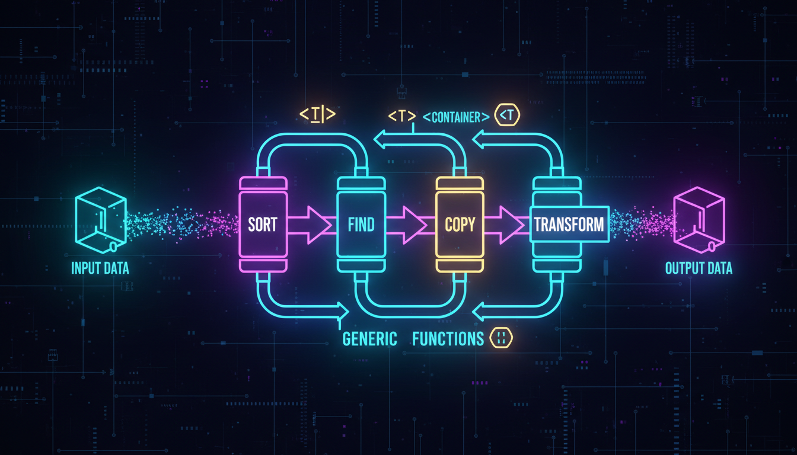

sort, find, binary_search, transform, accumulate

STL надає багато готових алгоритмів для роботи з контейнерами.
#include <iostream>
#include <vector>
#include <algorithm>
#include <numeric>
int main() {
std::vector<int> v = {3, 1, 4, 1, 5, 9, 2, 6};
// Сортування
std::sort(v.begin(), v.end());
// v: 1 1 2 3 4 5 6 9
// Бінарний пошук (потребує сортування!)
if (std::binary_search(v.begin(), v.end(), 5)) {
std::cout << "5 знайдено!" << std::endl;
}
// Пошук елемента
auto it = std::find(v.begin(), v.end(), 4);
if (it != v.end()) {
std::cout << "4 знайдено на позиції " << (it - v.begin()) << std::endl;
}
// Мінімум та максимум
auto [minIt, maxIt] = std::minmax_element(v.begin(), v.end());
std::cout << "Min: " << *minIt << ", Max: " << *maxIt << std::endl;
// Сума елементів
int sum = std::accumulate(v.begin(), v.end(), 0);
std::cout << "Сума: " << sum << std::endl;
// Підрахунок
int count = std::count(v.begin(), v.end(), 1);
std::cout << "Кількість 1: " << count << std::endl;
// Реверс
std::reverse(v.begin(), v.end());
return 0;
}